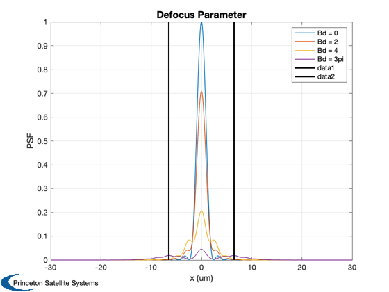
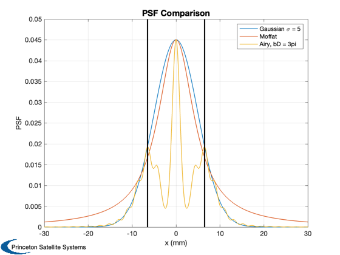

Parameter study for defocused Airy point spread function
Find the parameters for defocusing the Airy and Gaussian PSFs. Uses a unit intensity for a centroid at [0,0]. The defocused Airy PSF requires the camera focal length and aperture and the wavelength of light. We specify a pixel width and draw it on the plots so we can see if we are defocusing enough.
See also RHSGaussianPSF, RHSAiryDefocusedPSF, RHSMoffatPSF
Contents
%-------------------------------------------------------------------------- % Copyright (c) 2014 Princeton Satellite Systems. % All Rights Reserved. %-------------------------------------------------------------------------- % Since 2016.1 %--------------------------------------------------------------------------
The defocused parameter
The aim is to spread a star's PSF over multiple pixels on the actual camera. Assume a pixel is 13 microns wide.
% Optical parameters in mm %-------------------------- f = 50; % focal length a = 15; % aperture % Wavelength of light in nm %-------------------------- lambda = 600; % Pixel in um %------------ wPixel = 13; % Center of image %---------------- r0 = [0;0]; % Defocused %----------- dD.d.lambda = lambda; dD.d.f = f; dD.d.a = a; dD.d.bD = 0; dD.r = r0; dD.i = 1; x = linspace(-30,30,1000); % um y = zeros(1,length(x)); fD0 = RHSAiryDefocusedPSF(x,y,dD); dD.d.bD = 2; fD2 = RHSAiryDefocusedPSF(x,y,dD); dD.d.bD = 4; fD4 = RHSAiryDefocusedPSF(x,y,dD); dD.d.bD = 3*pi; fD10 = RHSAiryDefocusedPSF(x,y,dD); iA = RHSAiryDefocusedPSF(r0(1),0,dD); % peak value % Plot %------ Plot2D(x,[fD0;fD2;fD4;fD10],'x (um)','PSF','Defocus Parameter','lin', [], [], [], [], 1 ) legend('Bd = 0','Bd = 2','Bd = 4','Bd = 3pi') yA = axis; hold on plot([wPixel wPixel]/2,[0 yA(4)],'k','linewidth',2) plot(-[wPixel wPixel]/2,[0 yA(4)],'k','linewidth',2)
Compare defocused to simpler PSFs
% Gaussian %---------- dG.d.sigma = 5; % um dG.r = r0; dG.i = iA; fG = RHSGaussianPSF(x,y,dG); % Moffat %------- dM.d.rho = 5; % um dM.d.beta = 1; % um dM.r = r0; dM.i = iA; fM = RHSMoffatPSF(x,y,dM); % Plot %------ Plot2D(x,[fG;fM;fD10],'x (mm)','PSF','PSF Comparison','lin', [], [], [], [], 1 ) yA = axis; hold on plot([wPixel wPixel]/2,[0 yA(4)],'k','linewidth',2) plot(-[wPixel wPixel]/2,[0 yA(4)],'k','linewidth',2) legend('Gaussian \sigma = 5','Moffat','Airy, bD = 3pi') %-------------------------------------- % $Id: 119fc15516d734ec332da0780f173c450a5b434e $